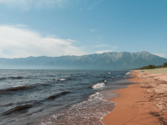
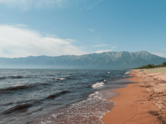

По опросам ВЦИОМ, 95% россиян мечтают куда-нибудь поехать,
но только 36% планируют провести отпуск в родной
стране. Мол, чего мы тут, дома, не видели? На самом деле,
Россия — это целая вселенная с ласковым морем юга,
густыми лесами Саян и суровыми льдами плато Путорана.
А ещё увидеть все эти красоты можно без миллионов
на счету, загранпаспорта и многочасовых перелетов. Как,
например, Вера Башмакова — смелая молодая мама, которая
взяла в охапку троих детей, усадила их в свою
«Ладу» и проехала 20 тысяч километров
по родной стране. Мы выбрали и описали некоторые
интересные места, достойные вашего отпуска.
Здесь, посреди лесов и песчаных дюн, вы сможете
увидеть два водных горизонта — спокойного Куршского
залива с одной стороны и подёрнутого рябью волн
Балтийского моря с другой. Уникальная природная зона
на краю российского анклава.
На этом Калининградская область не заканчивается. Для
путешественника и исследователя там же по
соседству — самая западная точка России, Балтийская
коса, — и немецкое наследие россыпи небольших
приморских городов. Атмосфера здешних мест исключает суету,
окуная в спокойствие природы и запах стального,
прохладного моря.
Почти весь полуостров находится за Полярным кругом.
Саамская тундра, от которой на юг —
тайга, а на север — Ледовитый океан,
прикидывающийся Баренцевым морем.
Возможно, вы смотрели Звягинцева и даже слышали
историю арктического фестиваля в Териберке. Возможно, слово
«Хибины» не осталось под снегом школьных
воспоминаний об уроках географии. Возможно,
вы не интересовались пронизывающей земную кору
сверхглубокой скважиной, а от апатитов вас давно
накрывает апатия. Но ваша мечта увидеть северное сияние
начинает сбываться с билетом в Мурманск.
Алтай — одно из красивейших мест в России.
В первую очередь из-за гор: если ехать вдоль хребта,
вы увидите склоны, усыпанные соснами, горные реки
и озёра. А если вы откроете в автомобиле
окна, сможете познакомиться с невидимым чудом здешних
мест — горным воздухом.
Климат на Алтае умеренный, поэтому ехать сюда лучше всего
летом. Так вы увидите всё разнообразие местной флоры
и фауны. По лесам Алтая бродят лоси, над хребтами
летают орлы, а на равнинах пасутся косули.
И знаменитые манулы — тоже обитатели Алтайского
края.
Всем известен Байкал как крупнейшее озеро
в мире. Многие также знают, что это самый большой
источник пресной воды и одно из красивейших мест
в России.
Конечно, это всё так. Но Байкал ещё идеальное место для
соревнований по скийорингу. Это такой вид спорта, когда
лыжник привязывает себя к мотоциклу, и тандем
старается развить как можно бóльшую скорость
на льду. В марте 2019 года на фестивале
«Байкальская миля» был поставлен мировой
рекорд — 197.011 км/ч.
Сибирь заканчивается не на Урале,
а в Карелии: образующая тайгу сибирская лиственница
не растёт западнее Водлозера. Зато здесь она вымахивает на
30 метров — леса карельских национальных парков
из-за непроходимых болот никогда не знали топора. Некоторым
соснам уже больше чем полтысячелетия. Прикоснитесь к живому
существу, видевшему солнце раньше, чем увидал его Иван Грозный.
В девственном лесу на сотню километров не встретишь
тропы. А на редких тропинках деревья в паре
метров от земли помечены медвежьими когтями. Чтобы все
знали, кто тут хозяин.
До Байкала «на собаках»
По мотивам учебной темы о Транссибе — путешествие от столицы до
Байкала на электричках.


 
